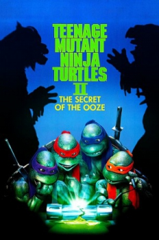

Country:United States, 88 minutes
Spoken languages:English
Genres:Sci-Fi, Adventure, Action, Comedy, Family
Director(s):Michael Pressman
Writer(s):Todd W. Langen
Video Codec:Unknown
Number: 726


Certification:PG
Storyline:
The Turtles and the Shredder battle once again, this time for the last cannister of the ooze that created the Turtles, which Shredder wants to create an army of new mutants.
Cast:


Medium: Original DVD,
Comments: w/ Teenage Mutant Ninja Turtles, Teenage Mutant Ninja Turtles III & TMNT
Loaned: No
Aspect ratio: Unknown